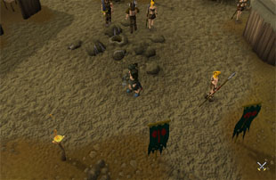
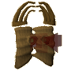
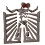
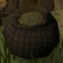

Stronghold of Security Introduction
Introduction | Location | Moving around the Stronghold of Security
Personalities | The Depths of the Stronghold | Rewards
Personalities | The Depths of the Stronghold | Rewards
Introduction

The Stronghold is not just another dungeon. Within its depths you will be required to answer questions about the security of your account (passwords, PINs, recovery questions and the like). These are all questions that you should know the answers to, but if you're not sure then you can brush up by reading the Customer Support section of the website.
Location

You can reach the Barbarian Village by travelling directly west from Varrock, or by following the road north, then east, from Falador.
Moving around the Stronghold of Security
As you move around the Stronghold you'll notice a number of features. Ladders down will take you to the next level down, while ladders, ropes and chains leading upwards will return you to the start of the current level. The bone rope at the end of the Sepulchre of Death will take you back to the surface. Portals are always located at the start of each level and will take you to the end of that level if you have a high enough Combat level or have completed this floor already.
Personalities
![[image: litara]](../img/main/kbase/guides/sos/litara.gif "litara")
This woman has been waiting by the entrance to the Stronghold since her brother went down. She has been waiting for a very long time now, and asks only that someone bring her news of her lost brother.
|
![[image: litara's brother]](../img/main/kbase/guides/sos/dead_barbarian.gif "litara's brother")
Once you enter the dungeon it will be quite obvious that Litara's brother didn't manage to escape (judging by the number of skeletons down there, not many people have). His sacrifice was not in vain, though, as he kept a diary of his adventures that you might find useful.
|
The Depths of the Stronghold

|
The Vault of War The Vault of War will be your first point of entry into the Stronghold of Security, and an ominous entry it is. The walls are solid stone and iron, and a baleful light flickers through grills set in the walls. The skeletons of those who have gone before litter the floors and the rooms swarm with beasts dedicated to the art of warfare. |
|

|
The Catacomb of Famine The second floor down is dedicated to starvation and hunger. It looks quite different from the Vault of War, as its floors are coated in sand, and the walls and doors seem to be made of bone. As you would expect, the inhabitants of this floor of the dungeon are driven by hunger and you could be their next snack. |

|
The Pit of Pestilence The third level is undoubtedly the most grotesque. Odd tendrils writhe in the corners of rooms and the walls and doors ooze foul-smelling fluids. You get the feeling that you'll catch some vile disease if you spend too much time down there. |
|

|
The Sepulchre of Death Like a temple to the worship of Death, this last floor is filled with bones. The walls are covered in them, the doors are constructed from them, and all of the creatures you will find there are already dead. The greatest reward in the Stronghold of Security awaits you, though... |
Rewards
![[image: skull sceptre]](../img/main/kbase/guides/sos/skull_sceptre.gif "skull sceptre") |
Skull sceptre Skull sceptres are staves containing the power of a teleport spell that will return you to the Barbarian Village 5 times. You can construct a skull sceptre by collecting the parts from monster drops. |

|
The Gift of Peace The Vault of War is a violent place, but War respects a warrior and is willing to offer a gift to those strong enough. For fighting your way through the Vault of War you will be rewarded with this chest, containing coins and a new emote for you to use. |
|

|
The Grain of Plenty Though the Catacomb of Famine is an arid place there is food there, albeit locked off from the Catacomb's inhabitants. The Grain of Plenty is the reward for making it through the starved corridors of the Catacomb of Famine. It contains coins and a new emote. |

|
The Box of Health The Pit of Pestilence is a decidedly unhealthy place to spend too long in, so it is only right that the Box of Health should wait for those who manage to make it to the central chamber. The Box of Health not only contains coins and an emote, but it will also restore all of your stats. |

|
The Cradle of Life The Gift of Life waits for only those adventurers strong enough and bold enough to defeat the Sepulchre of Death. You must have your recovery questions set to receive your prize. Within the Cradle are two pairs of boots, but you may only take one. If you change your mind and decide you'd like the other pair better, return to the Cradle to swap them. |
![[image: fancy boots]](../img/main/kbase/guides/sos/fancy_boots.gif "fancy boots") |
Fancy Boots These boots are one of the pairs you may choose from the Cradle of Life, and a delightfully decorative pair they are. They come with a number of bonuses and will make a fine addition to anyone's wardrobe. |
![[image: fighting boots]](../img/main/kbase/guides/sos/fighting_boots.gif "fighting boots") |
Fighting Boots For those among you who desire boots that look as brutal as possible. These horn-tipped warriors' boots not only tell your enemies that you're equipped to deal with them, but look quite spiffing with most types of armour. |

|
More articles in The Stronghold of Security
|
More articles in Stronghold of Security
|